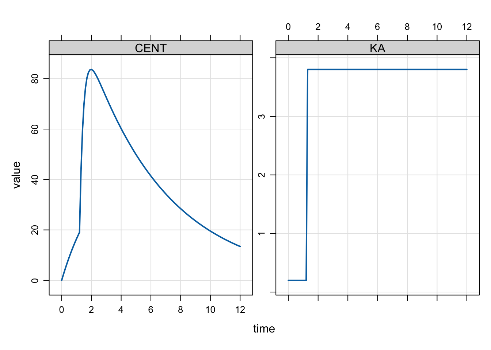

Modeled events
A modeled event is a discontinuity introduced into the simulation at a time and with characteristics that are determined within the model itself, rather than the standard setup of specifying these events via the data set.
In this vignette, we’ll focus on creating a discontinuity in the simulation so that the value of a parameter can change at a specific time that is not necessarily chosen prior to the run time.
1 Concept: mevent
This toy model shows how you can use mevent() to schedule a discontinuity into the simulation. This model doesn’t do anything, but will help us see what parts are in play.
[ MAIN ]
// Part A
if(NEWIND <=1) double mtime = 1E10;
// Part B
if(EVID==1) {
mtime = TIME + 1.23;
self.mevent(mtime, 33);
}
// Part C
capture past = TIME >= mtime;In contrast to the NONMEM MTIME() functionality, we have to do a little more work keeping track of the status of the system. There are multiple ways to organize this. I’m going to show you one way that tries to minimize the amount of this book keeping work.
In the first part of [ MAIN ], I will create a variable called mtime and initialize it to some large, arbitrary value. This is the time of the modeled event and we will eventually want to check to see if we are past this time. Initializing to this large .value will ensure we aren’t past mtime when the problem starts. This is Part A.
// Part A
if(NEWIND <=1 ) capture mtime = 1E10;Next, we’ll come up with some condition that will trigger the creation of the future discontinuity. In this example, we’ll check to see when a dose was given and schedule the event 1.23 hours into the future. We keep track of that future time in the mtime variable. That’s Part B.
// Part B
if(EVID==1) {
mtime = TIME + 1.23;
self.mevent(mtime, 33);
}There is a function in the self object called mevent() that takes two arguments: first the TIME of the event and second the EVID. In this example, we create a record with EVID of 33 at 1.23 hours after the dose. We pick EVID 33 as a unique flag for this event. But beyond that, the specific value isn’t important.
The final piece of this toy model is to check to see if the system has been advanced past mtime.
// Part C
capture past = TIME >= mtime;To put it all back together
[ MAIN ]
// Part A
if(NEWIND <=1) double mtime = 1E10;
// Part B
if(EVID==1) {
mtime = TIME + 1.23;
self.mevent(mtime, 33);
}
// Part C
capture past = TIME >= mtime;Now run this model to check the output. We want to see when the past variable switches to 1.
library(mrgsolve)
mod <- mread_cache("mevent_0")mod %>% ev(amt = 1, cmt=0) %>% mrgsim()## Model: mevent_0
## Dim: 26 x 3
## Time: 0 to 24
## ID: 1
## ID time past
## 1: 1 0 0
## 2: 1 0 0
## 3: 1 1 0
## 4: 1 2 1
## 5: 1 3 1
## 6: 1 4 1
## 7: 1 5 1
## 8: 1 6 1The switch happens at time 1.23, between time 1 and time 2. You can use the mrgsolve::report() function to check that the EVID==33 event happens at the proper time (not able to display this inside the vignette). This is an optional Part D.
// Part D
if(EVID==33) mrgsolve::report(TIME); So we can check that the model is actually stopping at this point (TIME 1.23). Note that this time is not included in the simulation time grid.
2 Application: time-varying KA
We can put this principle into action with a PK model where KA changes (increases) some time after the administration of the dose. Here’s the model
[ PARAM ] CL = 1.5, V = 8, KA1 = 0.2, KA2 = 3.8
[ PKMODEL ] cmt = "GUT CENT", depot = TRUE
[ MAIN ]
if(NEWIND <=1) double mtime = 1E10;
if(EVID==1) {
mtime = TIME + 1.23;
self.mevent(mtime, 33);
}
capture KA = TIME >= mtime ? KA2 : KA1;We have pretty much the same setup as the toy example above, but now including a PK model where KA changes from KA1 to KA2 at mtime
mod <- mread("mevent_1", req = "CENT", end = 12, delta = 0.1)When we simulate, we see KA increase at the change point as well as the rate of increase in the CENT compartment
mod %>%
ev(amt = 100) %>%
mrgsim() %>%
plot()
We can also run this model for several doses
mod %>%
ev(amt = 100, ii = 12, total = 4) %>%
mrgsim(end = 48) %>%
plot()
mrgsolve: mrgsolve.github.io | metrum research group: metrumrg.com